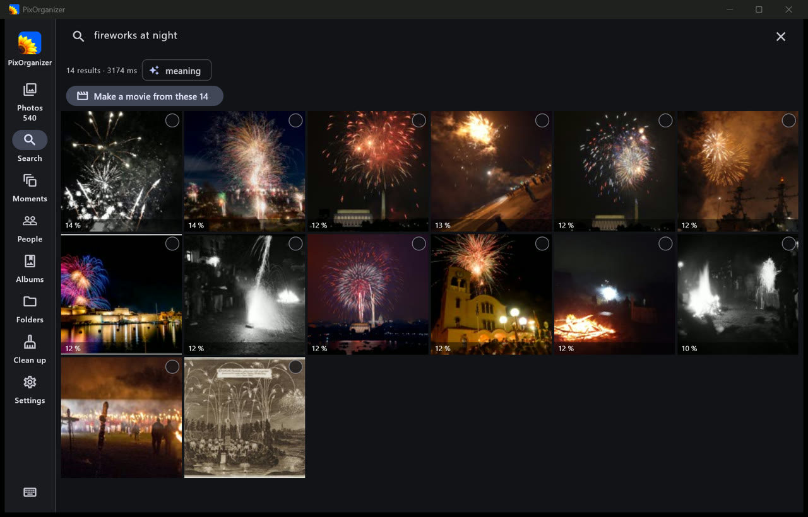
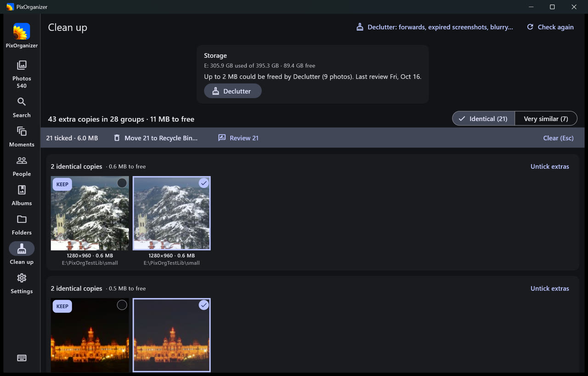
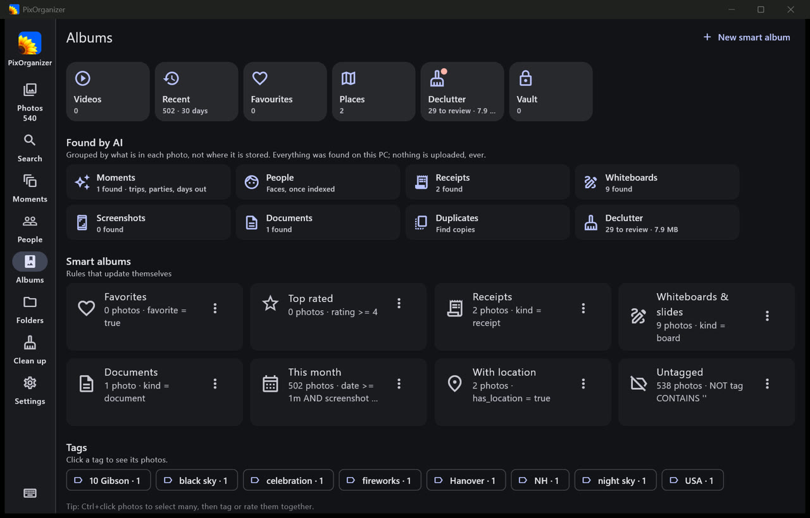

PixOrganizer
Find any photo on your PC by describing it.
Type “fireworks at night”, “sunset over the sea” or “receipt” and the right photos appear, even if they were never named, tagged or sorted. Free for Windows. Nothing leaves your computer.

Search by meaning
Describe what you remember: things, places, colours, moments. It also finds the text inside photos — receipts, slides, signs — and photos like the one you drop on the window.
Every drive
Your Pictures folder, a second disk, a USB drive, a network share, OneDrive. Photos are read where they are; nothing is moved or copied unless you ask.
Private by design
The AI runs on your PC, on the graphics card when there is one. No account, no upload, no ads, no analytics.



Also inside
- People: faces grouped so you name them once. Moments: trips and events grouped and named for you.
- Declutter blurry, dark and accidental shots; everything you delete goes to the Recycle Bin and can be put back.
- Pick, reject and rate with the keyboard; ratings and tags are written into your files, so Lightroom and Windows see them.
- Search inside your videos, movies with music, collages, PDFs, bulk rename and export, an encrypted Vault and backups.
Windows 10 (version 2004) or Windows 11, 64-bit. A graphics card makes the first reading of a large library faster but is not needed.